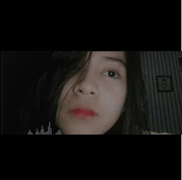

Hasbi LH
Pecandu kopi yang menyukai pop punk, emo, dan metalcore, halo saya Hasbi! Hobi saya bermusik, menulis lagu, mendesain website, dan mengulik segala hal terkait teknologi. Namun, dari semua hoi tersebut, tidak ada satupun hobi yang benar-benar saya kuasai, haha. Jika Anda ingin tahu lebih lanjut mengenai saya, silakan ikuti media sosial saya!
Proyek


ERUHARECORDS
Proyek lagu untuk member JKT48
Daftar lagu yang sudah diproduksi:

Hasbi LH - Teman Baru Azizi (Lagu untuk Azizi Asadel)

Tayateya - Yessica Satu-satunya! (Lagu untuk Yessica Tamara)
Keisyavers Farewell Project - Teruskan Langkahmu (Lagu untuk Keisya Ramadhani)

Cello Pangemanan - Semua Tentangmu (Lagu untuk Keisya Ramadhani)
Punkreas Project - Pengantar Mimpimu (Lagu untuk Febi Komaril)

Punkreas Project - Syair Semesta (Lagu untuk Riska Amelia)

Punkreas Project - Kepala Dua (Lagu untuk Viona Fadrin)

Punkreas Project ft. Taya - Sempurna (Lagu untuk Yessica Tamara)
Anisa Dwila ft. Hasbi LH - Cuitan Viona (Lagu untuk Viona Fadrin)

Punkreas Project - Selamat Ulang Tahun, Jinan! (Lagu untuk Jinan Shafa)
Hasbi LH ft. Anisa Dwila - Viona Fadrin (Lagu untuk Viona Fadrin)
Berjeketian
Proyek cover lagu JKT48
Cover lagu JKT48 terbaru:
Feeds
Cuitan SayaKetertarikan
Oshi
Perjalanan ngidol
Jessica Vania
Berawal dari iklan salah satu produk minuman isotonik, saya mulai mengenal JKT48 dan mencari tahu lebih dalam terkait grup ini, mulai dari mengikuti media sosial anggota-anggotanya, hingga menelusuri berbagai video-video yang tersedia di YouTube. Ada satu video yang menarik bagi saya, yaitu video event bukber tahun 2012 yang diunggah di kanal resmi JKT48. Saya melihat seorang anggota JKT48 yang memainkan gitar, dengan piawai ia mengiringi teman-temannya menyanyikan lagu-lagu JKT48. Setelah saya cari tahu, ternyata gadis itu bernama Jessica Vania. Segala informasi terkait gadis tersebut, hingga akhirnya muncul video berjudul "JKT48 - Hari Merdeka (Behind the Scenes)" yang diunggah pada tanggal 31 Agustus 2012. Sejak saat itu, saya memutuskan untuk menjadikan Jessica Vania sebagai oshi saya hingga kelulusannya di tahun 2017, meski sebenarnya di tahun 2016 saya sudah mengurangi kegiatan taek ini.
Yessica Tamara

Pandemi membuat semua hal berubah. Saya yang kurang lebih 4 tahun beristirahat dari kegiatan taek ini, memutuskan untuk kembali mengulik JKT48 yang kebetulan merilis single original berjudul "Rapsodi" pada tahun 2020. Rapsodi, sebuah hal yang berbeda menurut saya jika dibandingkan dengan era awal ketika saya aktif dalam kegiatan taek ini. Singkat cerita, saya kembali mencari informasi terkait anggota-anggota JKT48 yang baru. Semua media sosial saya telusuri, hingga pada suatu pagi saya menemukan foto di Instagram yang diunggah oleh salah satu anggota JKT48 ber-username @jkt48.chika. Sayapun mengambil tangkapan layar foto tersebut, kemudian membagikannya ke teman melalui WhatsApp. "Manis juga," ucap saya. "Dia mah bukan manis, tapi anggun," balas teman saya. "Fix, bakal jadi oshiku sih ini!" sahut saya sambil tersenyum ketika mengetiknya. Benar saja, beberapa hari kemudian saya memutuskan untuk menjadikan gadis tersebut (Yessica Tamara) sebagai oshi, bahkan sampai menggaet teman-teman untuk menggarap sebuah lagu dalam rangka perayaan ulang tahun yang bersangkutan. Keseriusan saya dalam mendukung Yessica Tamara bertahan hingga saat ini. Meskipun banyak rintangan dan cobaan, semua bisa saya lewati untuk tetap bertahan di sini (karena memang sudah pengalaman di oshi sebelumnya, wkwk).
Azizi Asadel
Satu tahun lebih setelah saya kembali terjerumus ke dalam kegiatan taek ini, rintangan dan cobaan silih berganti. Perlahan timbul berbagai hal yang mengganjal, mulai dari hal yang kurang sreg dengan gimmick oshi, kekhawatiran, atau mungkin hanya sekadar perasaan jenuh dan bosan (meski sebenarnya masih dalam tahap yang wajar). Azizi Asadel (anggota generasi 7 yang sebenarnya sudah lebih familiar di telingaku sebelum Yessica Tamara), seolah memberi angin segar dalam fluktuasi perasaan yang saya alami. Apalagi dengan tingkah lucu dan konyol, ditambah unggahan di TikTok yang selalu membawa kebahagiaan. Showroom, sebuah platform live streaming yang memudahkan saya dalam mendalami yang bersangkutan. Sayapun memulai gimmick dengan menggunakan display nameTeman baru Azizi di setiap live dengan tujuan mengais notice darinya. Sesuai ekspektasi, ia menyadari hal itu. Akhirnya saya memutuskan untuk melanjutkan gimmick saya ke jenjang yang lebih jauh, hingga terciptalah sebuah lagu dengan judul yang sama dengan display name saya di Showroom. Respon positif dari yang bersangkutan dan para penggemarnya, membuat saya semakin semangat untuk mendalami keseharian Azizi Asadel. Saya merasa diterima dengan sangat baik. Akhirnya saya memutuskan untuk sepenuhnya mendukung yang bersangkutan hingga saat ini.
Lagu
Lagu JKT48 kesukaan saya
7ji 12fun no Hatsukoi
Futari Nori no Jitensha
Rider
Himawari
Nagai Hikari
Anata ga Ite Kureta Kara